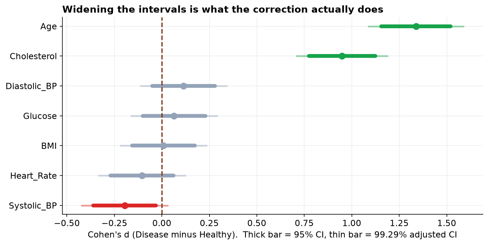

The last three capstones ran one test each. Real screening studies run many at once: a panel of markers, all compared between the same two groups. That is efficient, and it is dangerous, because every extra test is another chance for pure noise to cross the significance line. This project does the screen properly, builds the dashboard, tests all seven markers, and then applies the correction that keeps the whole thing honest.
- Setting
- A cardiac clinic recorded seven routine markers for 575 patients, along with whether each was diagnosed with heart disease.
- The question
- Which of the seven markers actually differ between healthy and diseased patients?
- Why it matters
- Markers that survive scrutiny go into a screening protocol. Markers that do not are false leads that cost patients follow-up tests they never needed.
- What we do
- Run the two-group comparison seven times, show how the false-positive rate compounds across a family of tests, apply the Holm correction, and report which markers survive as intervals rather than as verdicts.
Two markers truly separate the groups: Age and Cholesterol, both large and unmistakable. Blood pressure looked significant too (p = 0.02), which is tempting to believe, but it is a false alarm from testing seven markers, and it vanishes under correction. Age and cholesterol are the only two left standing.
The Question and the Design
A cardiac clinic recorded seven routine markers for 575 patients, along with whether each was diagnosed with heart disease. The screening question is: which markers actually differ between healthy and diseased patients? For each marker on its own this is the two-group comparison from Capstone 2. The new element is that we ask it seven times, which is where the trouble starts.
| Framework step | This project |
|---|---|
| Goal | Identify which of seven markers separate the healthy and disease groups. |
| Hypotheses | For each marker, H₀: the healthy and disease means are equal. Seven tests, one family. |
| Data type | Seven continuous markers, one binary outcome (Disease). |
| Design | Observational cohort. Two independent groups per marker, tested and then corrected together. |
The Clinical Dashboard
Before any test, four views answer most of the "what is going on here" questions: the age split by disease, a scatter of two markers colored by disease, the spread of every marker by group, and a correlation matrix that includes the disease label itself.
![A four-panel clinical dashboard. Top-left: histograms of age by disease status, with the disease group clearly shifted to older ages. Top-right: a scatter of BMI versus systolic blood pressure colored by disease, forming one overlapping cloud with no separation. Bottom-left: standardized boxplots of all seven markers by group, where only Age and Cholesterol show a visible gap between the healthy and disease boxes. Bottom-right: a correlation matrix; in the Disease row, Age is 0.55 and Cholesterol is 0.42, while every other marker is near zero.](../assets/img/capstone-heart-dashboard.png)
Disease row, Age sits at 0.55 and Cholesterol at 0.42, while every other marker hovers near zero. Two signals, five quiet markers, which the formal screen now has to confirm without being fooled.The Multiple-Comparisons Problem
Here is the trap. If a marker has no real association, a single test still calls it "significant" about 5% of the time by chance. Run that test seven times and the chance that at least one harmless marker lights up climbs fast, to about 30%.
The cure is to raise the bar. Bonferroni divides the threshold by the number of tests, so here a marker must clear p < 0.05 / 7 = 0.007, not 0.05, to count. Holm gives the same protection while rejecting slightly more true effects. We apply both to the seven p-values at once and see what survives.
The Corrected Screen
Each marker gets a Welch two-sample t-test (healthy vs disease), with its effect size, and then the whole set of p-values is corrected together. Ranked by effect size, the result is stark.
| Marker | Healthy | Disease | p (raw) | Cohen's d | After correction |
|---|---|---|---|---|---|
| Age | 47.5 | 61.7 | < 0.001 | 1.34 | survives ✓ |
| Cholesterol | 197.8 | 234.6 | < 0.001 | 0.95 | survives ✓ |
| Systolic BP | 129.7 | 126.7 | 0.021 | 0.20 | false alarm ✗ |
| Diastolic BP | 82.0 | 83.2 | 0.174 | 0.11 | not significant |
| Heart Rate | 74.9 | 73.8 | 0.208 | 0.11 | not significant |
| Glucose | 97.4 | 98.8 | 0.443 | 0.06 | not significant |
| BMI | 27.6 | 27.6 | 0.919 | 0.01 | not significant |
Read it top to bottom. Age (Cohen's d about 1.3) and Cholesterol (d about 0.95) are in a different league, and both clear even the strict Bonferroni bar. Now look at Systolic BP: its raw p-value is below 0.05, so a naive reading calls it "significant", yet its effect size is tiny and it does not survive correction. It is the false alarm the previous section predicted, and blood pressure is exactly the marker a reader expects to matter for heart disease, which is what makes it such a convincing trap.

First, correct for the number of tests, so a lone chance crossing does not get reported as a discovery. Second, read the effect size, not just the p-value: Systolic BP's d of 0.2 was never worth much even before correction. Reporting the one marker that crossed 0.05 out of seven, and staying quiet about the other six, is exactly how false findings reach print.
The Verdict, and Why Association Is Not Cause
Two markers genuinely distinguish diseased from healthy patients here: age and cholesterol. But this is observational data, a snapshot of who has the disease, with no intervention, so a real association is still a long way from a cause. The clearest reason is confounding, and age is the obvious culprit.
- Association, not causation. Age and cholesterol are associated with disease in this cohort; that alone does not prove either causes it.
- Confounding. Older patients tend to have higher cholesterol and more disease, so part of cholesterol's signal may be age riding along. Separating them needs a model that adjusts for age, which is regression, not seven separate tests.
- A screen is a starting point. Finding that a marker differs between groups does not make it a good predictor for an individual patient, and it is not a diagnosis.
- Multiple testing is an integrity issue. The correction is not red tape; it is what stops a seven-marker fishing trip from producing a headline about blood pressure.
Multiple Comparisons in Data Science & AI
The moment you test many things at once, this problem appears, and modern data work tests a great many things.
| Where it appears | The many tests |
|---|---|
| Feature screening | Checking hundreds of features for association with a target; some will look predictive by chance. |
| A/B testing | Watching many metrics or many segments on one experiment inflates the odds of a spurious "win". |
| Model comparison | Benchmarking many models on one test set; the apparent best can be luck without correction. |
| Genomics and beyond | Thousands of tests at once, where corrections (and the false discovery rate) are standard practice. |
When the number of tests is huge, controlling the family-wise error with Bonferroni gets too conservative, and teams switch to controlling the false discovery rate (the Benjamini-Hochberg procedure), which limits the share of "discoveries" that are false rather than the chance of any false positive. The instinct is the same one this capstone teaches: the more you test, the higher your bar has to be.
The Correction, Seen as Intervals
Multiple-comparison corrections are usually presented as a shrinking p-value threshold, which is abstract. The same correction has a concrete visual form: the confidence intervals get wider. Seven markers tested at a family-wise 5 percent means each individual interval must be a 99.29 percent interval rather than a 95 percent one.
| Marker | Cohen's d | 95% CI | 99.29% CI (adjusted) | Verdict |
|---|---|---|---|---|
| Age | +1.34 | +1.16 to +1.52 | +1.09 to +1.59 | survives |
| Cholesterol | +0.95 | +0.78 to +1.12 | +0.71 to +1.19 | survives |
| Systolic BP | −0.20 | −0.36 to −0.03 | −0.42 to +0.03 | crosses zero |
| Diastolic BP | +0.11 | −0.05 to +0.28 | −0.11 to +0.34 | never significant |
| Glucose | +0.06 | −0.10 to +0.23 | −0.16 to +0.29 | never significant |
| Heart rate | −0.10 | −0.27 to +0.06 | −0.33 to +0.12 | never significant |
| BMI | +0.01 | −0.16 to +0.17 | −0.22 to +0.24 | never significant |

Age and cholesterol are untouched by the widening. Their intervals stay far from zero either way, which is what a robust finding looks like: it does not depend on how generous you are being with the threshold. Systolic blood pressure depends on it entirely. Reporting the intervals rather than the p-values makes that distinction visible to a reader who has never heard of Holm's procedure.
The full project, step by step
The companion notebook builds the four-panel dashboard, cleans the cohort with a printed audit trail, runs the
seven Welch t-tests, applies the Bonferroni and Holm corrections to the whole set with statsmodels,
and draws the effect-size screen. It also shows the family-wise-error arithmetic and the point-biserial
correlations that tell the same story from the correlation angle. Every number in this chapter comes from its
output, with a plain-language note after each result.
The dataset (capstone-heart-disease-markers.xlsx) holds the
cohort on the patients sheet, with a codebook and notes, and keeps the missing values, impossible entries,
and duplicate rows so you can practice the cleaning. Two written reports accompany it: a plain-language
brief for a clinical audience (which markers are worth pursuing, why blood pressure did not make the cut),
and a technical report, a journal-style write-up with full methods, the multiple-comparison
correction, the effect-size screen table, and references, including the confounding and false-discovery discussion.
🎓 Key Takeaways
- ✓Testing many markers inflates false positives: seven tests at 5% give about a 30% chance of at least one false alarm.
- ✓Correct the whole set: Bonferroni (p < α/k) and Holm keep the family-wise error near 5%.
- ✓Only Age and Cholesterol survived (d = 1.34 and 0.95); Systolic BP was significant raw (p = 0.02) but a false alarm that correction rejected.
- ✓Read the effect size, not just the p-value: the false alarm had a tiny effect from the start.
- ✓Association is not cause: this is observational data, and age confounds the markers, so a regression that adjusts for age is the honest next step.
Quiz: Test Yourself
Eight questions on this capstone, from the dashboard to the false alarm. Answer them, hit Check Answers, and keep refining until you score 100%. Your progress is saved.